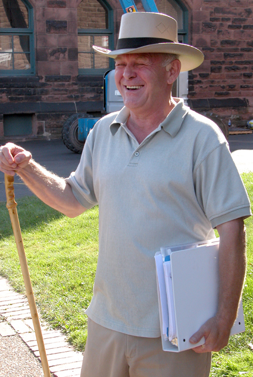

A message from our good friend, Rick Simpson:
|
August 06, 2008
Hemp Medicine – Let the Healing Begin
When are people going to wake up and look at what the system has been doing to them? In 1923, the Canadian Government in all their wisdom passed laws restricting the use of Indian Hemp for medicinal purposes. Then in the 1930’s they renamed Hemp “Marijuana” and proceeded to try to brainwash the public into believing that hemp was some new, dangerous, and addictive drug. Right up the present day the government has continued their smear campaign against hemp with no evidence to back up what they have been telling us.
Hemp is not a drug, it is a plant, and hemp is the most medicinal plant on Earth. Throughout history, hemp has always been known to be man’s oldest known and safest medication. Also, the non-addictive nature of this plant has been known for thousands of years. In medicine hemp was known as a panacea, which means “cure-all” and the old pharmacopeias reflect this.
So why would our government pass laws to restrict the use of a plant that was known to possess all of these medicinal virtues? The answer is sickening, yet simple (big money). Governments’ rich friends wanted hemp outlawed because hemp presented a danger to their monetary concerns. Laws are supposed to be put in place to do the greatest good for the greatest number; obviously this law restricting hemp’s medicinal use is corrupt.
It seems that average person does not understand the magnitude of the crime that has been committed against humanity. Since 1923, the government has been watching their own citizens suffer and die for no reason other than greed. How long are we to continue to allow this to happen? Have we not heard enough of their double-talk? And is it not time for the truth to be told? The number of people suffering from life-threatening diseases like cancer are increasing at an alarming rate, but government just sits there and does nothing. As if all of this is not bad enough, over the years government has corrupted everything they could control to stand against hemp’s use. Politicians, lawyers, doctors, R.C.M.P. officers, etc., etc., etc., all do the government’s bidding without question. Many of these people behave this way due to sheer ignorance of the facts. They like to use lines like, “We are just doing our job.” As the old saying goes, ‘You would be amazed how hard it is to get someone to understand something when their job depends on them not understanding it.’

A great number of people in many professions today are more than happy to go along with the corruption so they can make an easy living at the public’s expense. All they have to do is have no conscience, and simply deny to themselves that they are doing wrong, and the government will back them up. Do people really believe that doctors know nothing of hemp medicine? How could any doctor not know of the medicinal virtues and uses of the most medicinal plant on Earth and call themselves a doctor? What about the lawyers? Do they not know that the law prohibiting hemp’s medicinal use is an abomination? Of course they do. The truth is that lawyers make a great deal of their incomes defending and prosecuting people facing hemp charges. Do you think lawyers want to see these hemp laws abolished? You bet your life they don’t.
Well, I’ve got some bad news for all these professional-types; you have just hit a brick wall called the truth. We are no longer going to stand for this nonsense. We now know what hemp medicine can do, and soon everyone on this Earth will. Since we released Run from the Cure: The Rick Simpson Story this January, our documentary has gone around the world. We have now been translated into eight different languages, and we are receiving results from people everywhere. It seems that everyone is finding the same wonderful results with this medication. The genie is out of the bottle and the system can’t put it back in. The unbelievable simplicity of hemp medicine puts this medication within the reach of everyone since just about anyone can produce their own. No longer are people at the mercy of our health care system, and pharmaceutical companies; for now they can provide themselves with a natural medication that is far superior to any medication the medical system has.
How can the government continue to ignore this when word of mouth is spreading the truth about hemp so rapidly? Every day hemp medicine is gaining credibility and every day government is losing it, and well, they should. In the end, government or not, you cannot deny reality. The public knows the truth about hemp medicine and when the public gets mad they also know how to deal with corruption. Do people in authority who are trying to lie to us about hemp not realize the position they are putting themselves in? There is a price to be paid for lying to the public, and for causing untold suffering. Do you think these people want to pay it?
We do not advocate bloodshed or retribution, but we do demand change, and if these changes are not made one day being a politician in this country (retired or otherwise), may become a very rocky row to hoe. Your Right Honorable title won’t do you much good once the public knows what you have been doing to them. There is nowhere to run, now stand up and face the truth and start working for the people who are paying you (the Public).
No matter what Ottawa says, no one has the right to demand that you must have a license to possess or to grow hemp. Also, no one has the right to tell you that you cannot use man’s oldest known and safest medication to treat your own medical conditions. The body we inhabit belongs to us and it would be utter insanity to allow anyone to tell us that we cannot use hemp medicine to heal it.
Why should it surprise anyone when the essential oil from the hemp plant is produced, that the resulting oil is a true miracle drug? After all, as was stated, it is the most medicinal plant on Earth. The results we have achieved with this oil speak for themselves. Our research indicates that hemp oil is an effective cure or control for practically any disease known to man. We have seen all types of cancers anywhere in the body destroyed harmlessly. Also we have noted other diseases, said to be incurable, treated very effectively with this medication. The time for hemp medicine has arrived and never has mankind needed it so desperately.
What we have been doing at Phoenix Tears has never been about money. Indeed many of the people who use this medication were supplied free of charge. I have never charged anyone for my labors when producing the medicine. Our hope is that one day very soon we will be able to supply this medication on a donation basis, that way no matter what – if you are ill and don’t have the money you still get the medicine. Should your life really depend on how thick your wallet is? The most exciting aspect of hemp medication is its ability to prevent disease. Why allow diseases like diabetes, cancer, M.S., etc., to get a foothold in our bodies, when it can be prevented? In my mind it is much better to prevent the disease from ever occurring rather than have to treat it after it does.
Today there is much talk of world government and a new world order; of course big money is behind all this… so they can continue to run this planet. It is my opinion that a world government and a new world order can provide the answers if they use truth, knowledge, and honesty in their decision-making processes. The aims of a world government must always be toward the betterment of all mankind, and no concern should be given to the whims of big money; since this is what has caused this mess in the first place. We need government for the people that will ensure our rights and freedoms. Is that not what a true democracy is supposed to be about?

Over the last few years I have come in contact with many wonderful people about this issue, and they – like myself, have been waiting for the tide to change. With the information that is at our fingertips today this darkest chapter in man’s history must come to an end.
A few months ago I had the honor of coming into contact with Jack Herer, and Jack and I became instant friends. Jack was good enough to send me two copies of his book ‘The Emperor Wears No Clothes”, and also two copies of his documentary “Emperor of Hemp”. When I watched Jack’s documentary and read his book I was truly blown away. We had gained much knowledge about hemp through our research, but Jack’s book has filled in many gaps. I suddenly realized that if we had acquired his book many years ago we could have avoided thousands of hours of research. I consider Jack’s documentary and his book to be masterpieces. I think Jack’s book is one of the most important books ever written, for it so vividly displays the truth to all who read it.
When Jack contacted me he asked me to appear on his internet TV show at VideoFreeEarth.com. I told Jack that due to my “dark criminal past” I could not enter the U.S., so Jack suggested that I could do the show over the phone. I have been on Jack’s show about eight times now and I have enjoyed every minute of it. Back in 2001 Jack had suffered a stroke and the damage was quite severe. He also had problems with diabetes and diabetic ulcers…. as time had passed Jack’s conditions worsened and he had pretty well given up on the idea of every making a recovery. Then into Jack’s life came the real medicine, hemp oil. After only about two months of use the improvement in Jack’s condition was astounding. When I talk to Jack now he tells me he feels like he is 35 again, to me this is a blessing for now the cause has its greatest warhorse coming back to his old form. Welcome back, Mr. Herer, you have been badly missed.
After going through the greatest Kangaroo Court Case in Canadian History, I have been branded a criminal and I wear the badge proudly. Who are the real criminals? Look what our government is doing to Marc Emery. Instead of defending Marc’s position as they should, they are going along with the American government with this extradition nonsense. Marc sold seeds from the most medicinal plant in the world, to Americans, and now the D.E.A. would like to lock him up for life. Does this sound like a fair shake to you, for something that is not even illegal in Canada? Mr. Harper, you are a true piece of work. Isn’t it time to tell Mr. Bush to get lost? If I was the Prime Minister of Canada, I would, and I so would many others.
I did, for a time; think about going to live in South America, and leave all this insanity behind… but if we all run away nothing will change. My father fought for this country and I will fight until this beautiful land is once again free. The corruption must go, and I will not stop until hemp medicine is available everywhere. I ask everyone to join with me. It’s your lives that are at stake.
Recently I have done four open-line talk shows on American radio stations. The last one I did was with Mike Hagan out of Columbia, MI. I was on the air with Mike for three solid hours. During all of these broadcasts no one has ever challenged anything I have said. Also I was on the Rick Howe Show on CJCH radio in Halifax, N.S. It is more than obvious that everyone supports what I am doing, so why doesn’t the government?
The Chronic Pain Management Association of Canada has asked me to speak at Dalhousie University on October 4th, 2008. I think this will prove to be an interesting day. Wait until they get a load of what this medication can do. Recently I spoke with Gord Hume, also known as Zardos, he too is also doing a big write up for Treating Yourself Magazine detailing my activities with the hemp oil.
And last but not least I am planning to run again in the next Federal election, maybe it is time for someone to go to Ottawa and slay the dragon. I am carrying a very big stick, the cure for cancer, and public opinion. We will have the medicine and not just here, but all over the globe. Let us use hemp (the tree of life) and let the healing begin.
Rick Simpson
|
© Jack Herer 2009